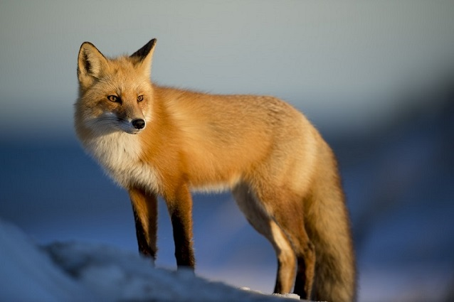

Foxopedia Wiki: Introduction to the Vulpine Species
Foxes are dog-like organisms that belong to the canine family, also being among the smallest of the group. Only about 12 of 37 species of foxes are actually scientifically refered to as foxes, those being "True Foxes," or the Vulpes genus. Foxes are ranked as the smartest of the canine group, which is where they obtained recognition as "smart" and "cunning." While they are part of the canine family, they are vastly different than most organisms in the family, which goes in line with the common misconception that foxes are more like felines.
One example of differences is that foxes do not bark like most canines. They also do not live in packs, as they are more independent hunters. Foxes are nocturnal, prefering to hunt at night and sleep in the day. If a fox is seen in the day time, it means that something is wrong.
The fox species are found in several environments including plains, mountains, cold terrain, and the desert. Their adaptability has allowed them to inhabit several parts of the Earth. While they have managed to find several places to live in the world, they are typically not welcomed by humans. In several accounts of mythology varying across the world, foxes are regarded as evil/tricksters.